FORD EXPLORER ST WERSJA 6-OSOBOWY,
ROK PRODUKCJI : 2020,
SILNIK : 3.0 V6 O MOCY 404KM BENZYNA,
SKRZYNIA BIEGÓW : AUTOMATYCZNA,
NAPĘD : 4x4
SAMOCHÓD ZAREJESTROWANE W KRAJU , GOTOWY DO JAZDY , NIE WYMAGAJĄCY DODATKOWYCH NAKŁADÓW FINANSOWYCH.
STAN AUTA WIZUALNY JAK I MECHANICZNY IDEALNY ! ! !
Wnętrze auta czyste i zadbane jak przystało na faktyczny, niski przebieg auta.
Mechanicznie w stanie idealnym, po wymianie wszystkich filtrów jak i oleju w silniku. Wizualnie prezentuje się bardzo okazale z czarnymi wstawkami pakietu ST, lakier
PERŁOWY w idealnej kondycji.
Samochód prowadzi się fenomenalnie i co najważniejsze - każda opcja wyposażenia jest w pełni sprawna, wszystko funkcjonuje jak powinno. Auto Idealnie nadaje się w
długie trasy.
FORD jest wyposażone niemalże we wszystkie udogodnienia takie jak:
*PANORAMA
*WENTYLOWANE PRZEDNIE FOTELE
*FOTELE Z FUNKCJĄ MASAŻU (PRZÓD)
*EL.SZYBERDACH
*PODSUFITKA CZARNA
*EL.KLAPA BAGAŻNIKA
*NAVI MMI
*BLISY W LUSTERKACH
*WIRTUALNY KOKPIT
*ALUFELGI R21
*FULL LED TYLNE I PRZEDNIE
*FOTELE KOMFORTOWE , PEŁNA REGULACJA ELEKTRYCZNA
*FOTELE PODGRZEWANE I WENTYLOWANE
*EL.USTAWIANA KOLUMNA KIEROWNICY
*ŁOPATKI DO ZMIANY BIEGÓW
*PAMIĘĆ FOTELI
*GRZANA KIEROWNICA
*KAMERY 360
*ASYSTENT PARKOWANIA
*ASYSTENT ZMIANY PASA RUCHU
*ELEKTRYCZNIE SKŁADANA TYLNA KANAPA
*Apple CarPlay
*ORAZ WIELE INNYCH PODSTAWOWYCH ELEMENTÓW WYPOSAŻENIA . . .
NA AUTO WYSTAWIAMY FAKTURĘ VAT-MARŻA , KUPUJĄCY JEST ZWOLNIONY Z 2% OPŁATY SKARBOWEJ.
NALEŻYMY DO ELITARNEJ SIECI DEALERÓW AUT UŻYWANYCH MOTOPLEJADA.
ZACHĘCAMY DO ODWIEDZANIA NASZEJ STRONY KOMISU NA PORTALU „MOTOPLEDA” : goldcar.motoplejada
JESTEŚMY W CZOŁÓWCE PIĘĆDZIESIĘCIU NAJLEPSZYCH AUTO KOMISÓW W CAŁEJ POLSCE, którzy spełniają najwyższe oczekiwania usług, utrzymują wysoki standard obsługi, a za najwyższy priorytet stawiamy sobie bezpieczeństwo i satysfakcję swoich klientów. Klientom sieci Motoplejada gwarantujemy:
-najwyższą jakość obsługi
-zakup auta z pewnego źródła
-potwierdzony faktyczny stan pojazdu
-sprawdzoną historię pojazdu
-roczną rozszerzoną gwarancją na samochód
-pewność reklamacji
-dostępność samochodu zastępczego
-gwarancję odkupu w okresie 24 miesięcy
-atrakcyjne finansowanie
-rejestrację pojazdu w imieniu klienta
Wszystko to możemy zapewnić dzięki najwyższym wymaganiom jakościowym stawianym dealerom sieci Motoplejada.
DLA UŻYTKOWNIKÓW OGLĄDAJĄCYCH PRZEZ PORTAL :”OLX”
W CELU OBEJRZENIA WIĘKSZEJ ILOŚCI ZDJĘĆ,PROSZĘ KLIKNĄĆ NA IKONĘ :
SPRAWDŻ DODATKOWE PARAMETRY NA „OTOMOTO”
Możliwość sprawdzenia stanu technicznego na dowolnej stacji kontroli pojazdów.
Możliwa ZAMIANA, kupno na RATY oraz zostawienie własnego pojazdu w ROZLICZENIU.
W razie potrzeby na miejscu pomagamy załatwić korzystny kredyt samochodowy lub leasing.
W naszej firmie również mogą państwo zrobić:
Ubezpieczenia: AC, OC, NNW, Pakiet Ubezpieczeniowy;
Oraz tłumaczenia dokumentów samochodowych – najtaniej w okolicy.
Przed przyjazdem prosimy o kontakt telefoniczny w celu sprawdzenia aktualności oferty.
Serdecznie zapraszam na jazdę próbną.
G W A R A N C J A „VIP GWARANT SERVICE” – możliwość wykupienia trzy miesięcznej gwarancji technicznej z możliwością rozszerzenia do 12 miesięcy.
Obejmuje :
- wszystkie usterki techniczne (związane z gwarancją) wynikłe po nabyciu
pojazdu,
- przednie zawieszenie - amortyzatory, sprężyny itp.,
- tylne zawieszenie,
- jednostkę napędową - silnik,
- zawieszenie hydro-pneumatyczne,
- zawieszenie komfortowe,
- skrzynię biegów manualną,
- skrzynię biegów automatyczną,
- turbiny i turbosprężarki,
- koła dwu masowe,
- mechanizmy różnicowe ,
- wały pędne,
- komputer główny,
- łańcuchy rozrządu,
- paski rozrządu (pęknięcie, zerwanie, zsunięcie),
- pomoc drogowa, holowanie do miejsca naprawy bezgotówkowej,
- obudowy - skrzyni biegów, silników, mostów, miski olejowej itp.
- Vip ACOC – bezgotówkowa pomoc przy likwidacji szkód komunikacyjnych,
- pojazd zastępczy na czas naprawy,
- naprawa i wszystkie części w okresie gwarancji usuwane będą
bezpłatnie.
Dodatkowo na terenie całego kraju holowanie pojazdu do miejsca naprawy
bezgotówkowej.
VIP ACOC Likwidator - bezpłatna pomoc w likwidacji szkody z AC lub OC
sprawcy, system bezgotówkowej.
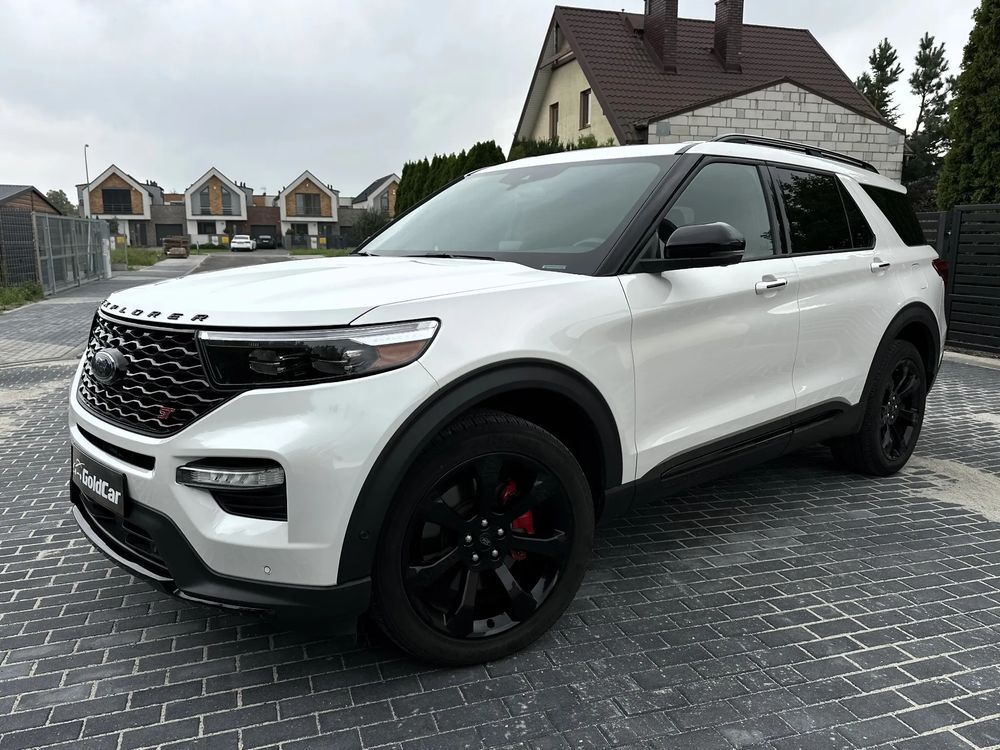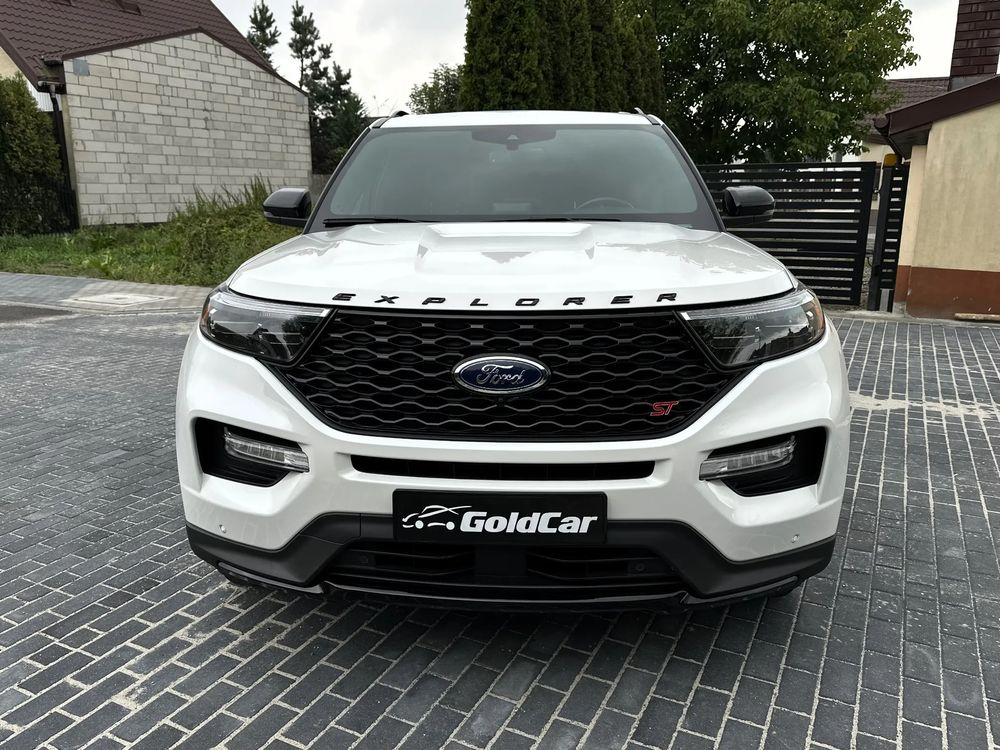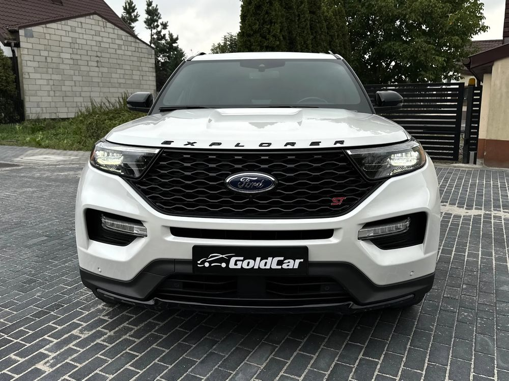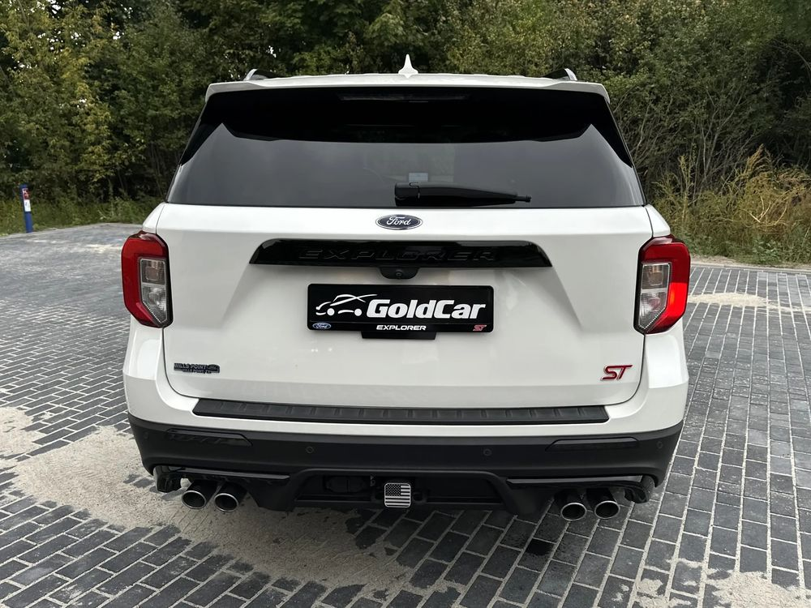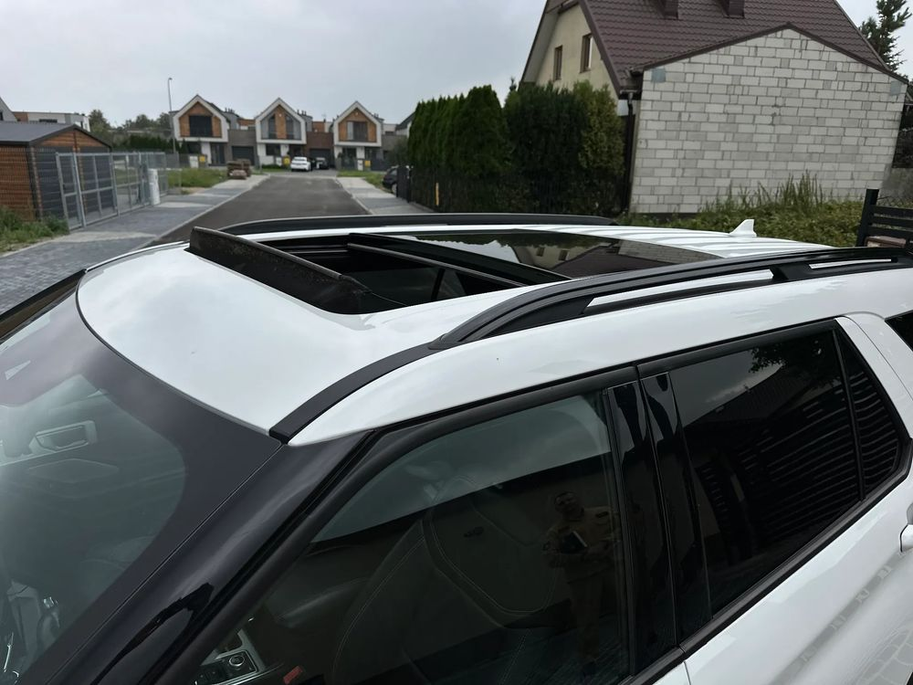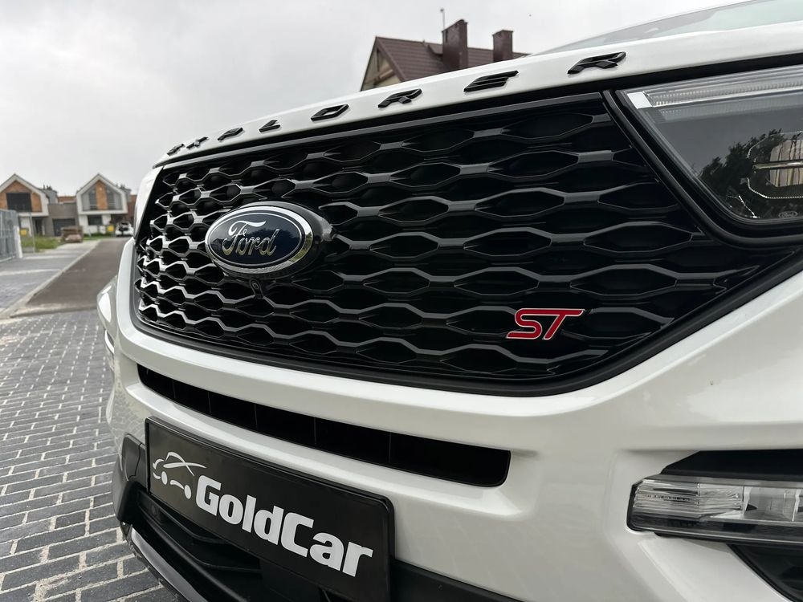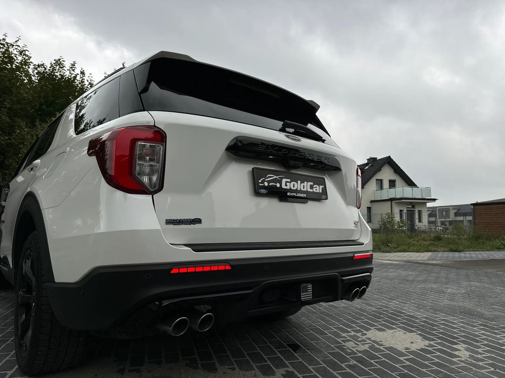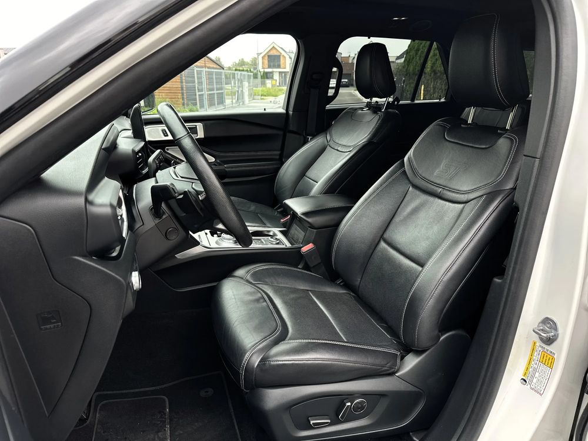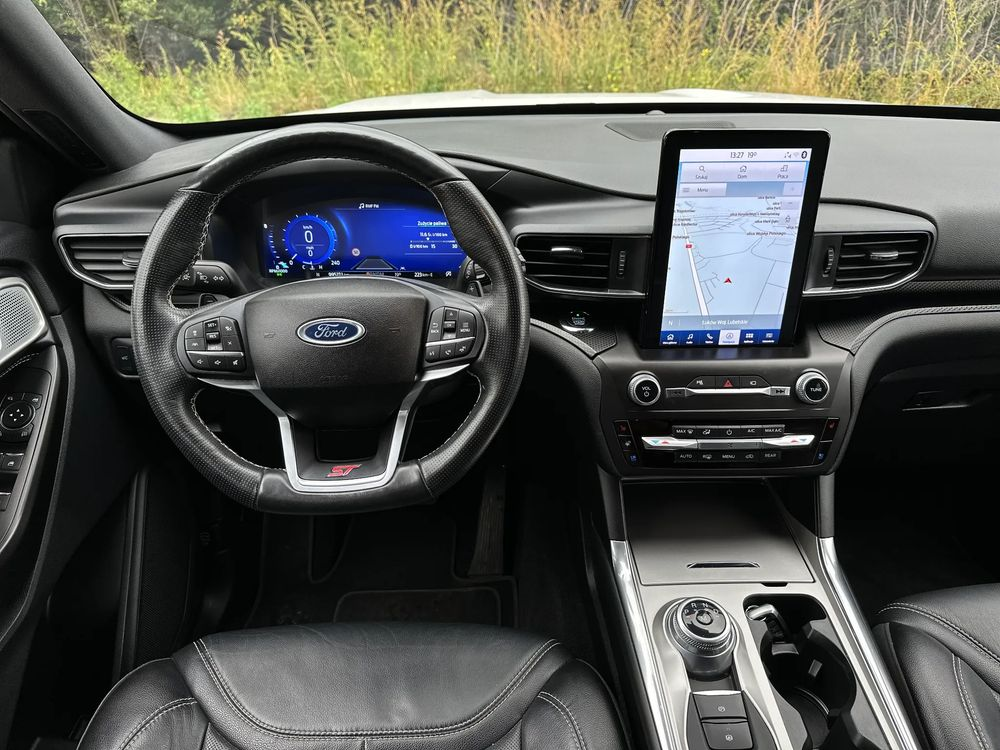 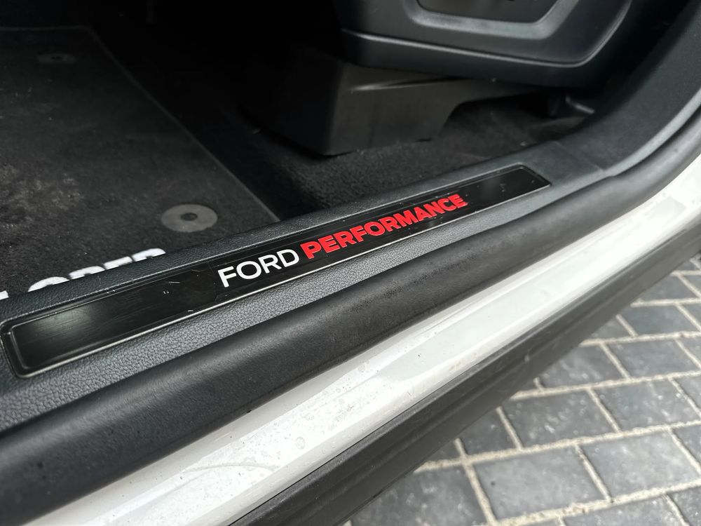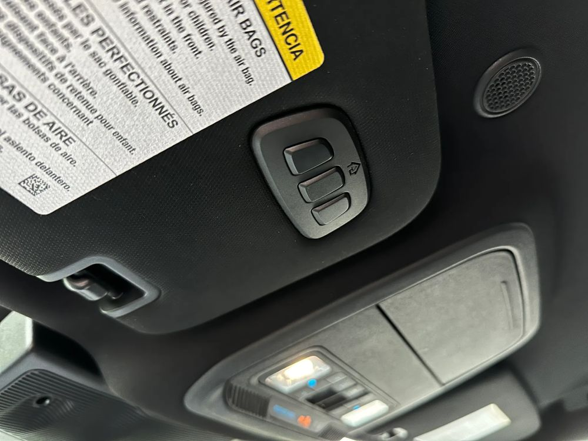
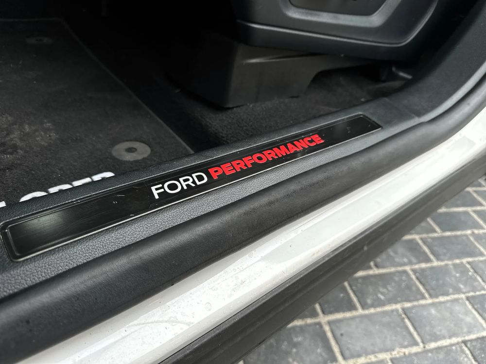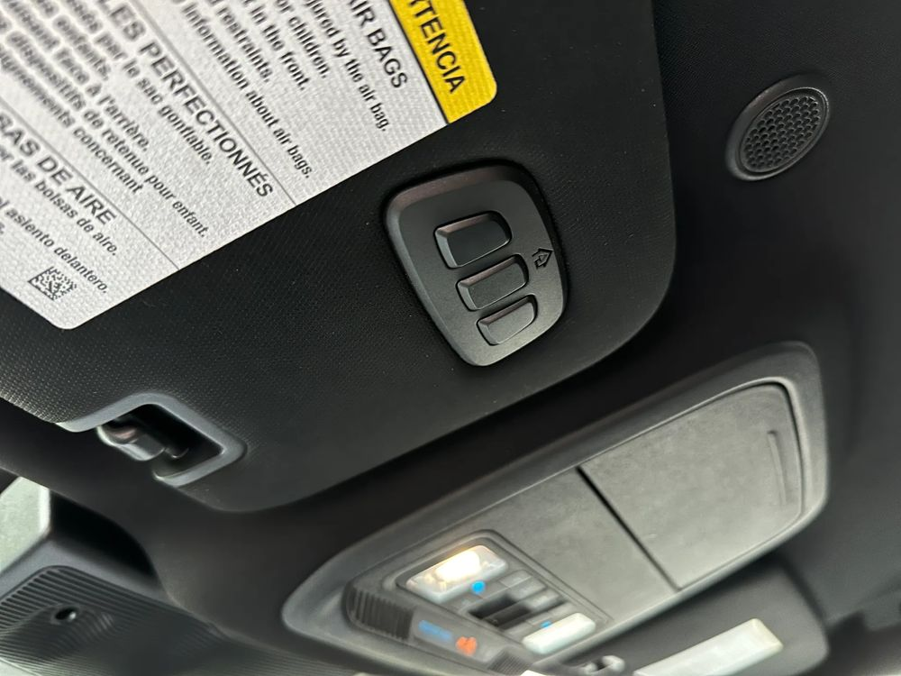